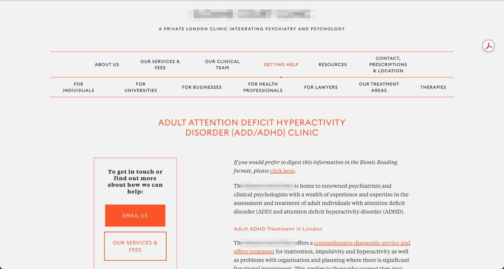
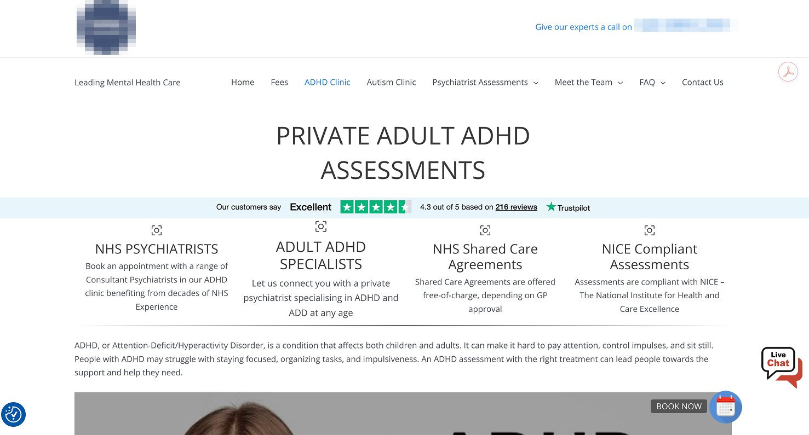
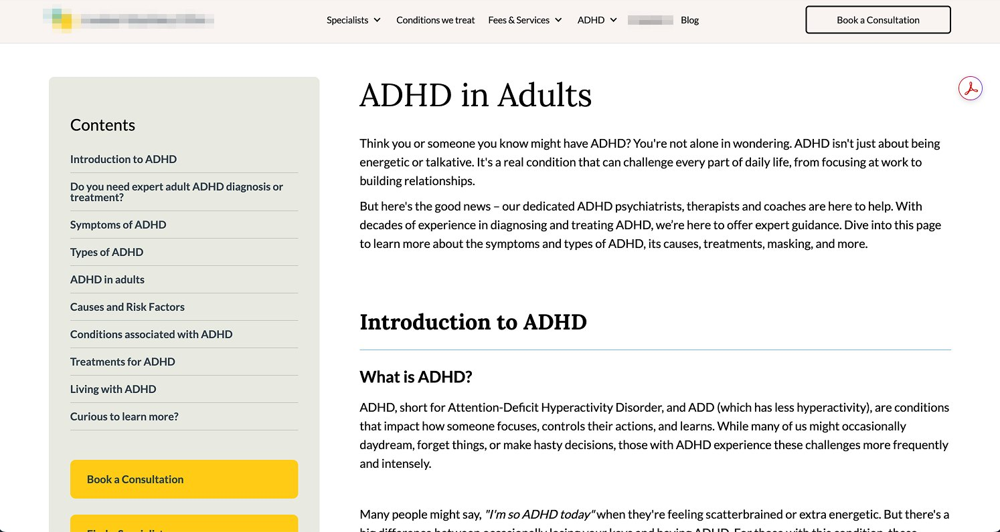
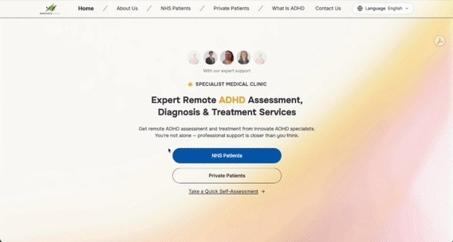

This page runs on the product’s rules. One idea at a time, large type, high contrast. If it reads easily, that is the case study.
The problem
Somebody who suspects they have ADHD has three things to get through first. None of them is built for them.
01 · The website



Small type, long navigation, paragraphs before anything happens. Counted off the first one:
A lot of attention to spend before you have learned anything.
02 · The assessment

Eighteen questions, five lines of text each, and at the end you add up your own score across two parts.
The form asks for the exact executive function ADHD takes away. People started it, stopped partway, and never reached care.

03 · The two are never in the same place
You read the site, then you register somewhere else, then a questionnaire arrives by email, and you have to remember to go back and finish it.
Every step is somewhere to drop out, and this is the audience least able to carry a plan across them. None of the three pages above keeps the test on the page.
What I did
The brief I set myself: spend as little of a person’s attention as possible before they know whether they need help.
01 · Put the assessment inside the site
We were the first to put the screener inside the page itself. It sits there, in the page. No account, no email, no second visit. You answer, and the result and the next step are right there.
The team has changed the site since I left: the assessment sits much further down the page now, and some of the detail went with it.
02 · Gamify it, so people finish
Each question arrives on its own, answered by dragging a slider, with a face that reacts as you move it.
Underneath is the ASRS’s own screener, Part A: six questions out of the eighteen, scored the way a clinic scores them.
Four or more and it tells you to go and get assessed. Shorter, still clinically valid.


03 · New rules for the whole site
The site around it had been built for a neurotypical reader, like the clinic pages.
So I wrote new rules: one highlight colour so the eye lands where it should, larger type, more space, one clear action per screen.
Transform ADHD
Heading 2 · Onest 34 SemiboldQuick Assessment
Heading 3 · Onest 24 SemiboldWhat the result means
Body · Onest 18 RegularStruggling with focus, overwhelm, or feeling misunderstood?
Link · Onest 18 Regular · #8E5D04Book an assessment
Ratios are the text colour on each ground. The highlight is a fill at 1.8:1 as text, so links take a darker tone, #8E5D04.
The same count, on my page
| Clinic page | Innovate ADHD | |
|---|---|---|
| Links in the first screen | 19 | 8 |
| Navigation items | 13 | 5 |
| Words in the first screen | about 150 | 45 |
Counted the same way, both captures 1280 wide.
Every row is countable. None of it is taste.

The result
Four people with ADHD used it, and I sat with them.
“It felt easier. Other sites have so much text that I have no idea where to look.”
“The interaction is actually interesting. The old ones are so dull. I finished it, and I got my result quickly. I didn’t have to register, wait for a screening questionnaire, then remember to answer an email — that kills any motivation to do the test. Here I could see my result and what to do next, right on the page.”
“This would work for the full twenty-four-question version. I think far fewer people would give up halfway.”
“Cute site. I like it.”
“The logic is really clear, and the thing that made me happy is that I actually finished the basic ADHD test. I like it. It’s genuinely fun.”
Five people, all five reached the end, and each said the same thing: easy to move through, and they knew quickly whether they needed help.
What people used
of all clicks on the page landed on the assessment slider.
The most-used thing on the page, and that page is the one the product depends on.
Microsoft Clarity, on the live site after launch.

What none of this proves yet is clinical outcome. That needs a longer run against the original form.
How I think about this
I design for ADHD.
Executive function is the expensive part.
The usual answer is to ask somebody to concentrate harder. I build the thing so that concentrating is not what it costs.
This page was built the same way, which is the only argument for it I trust.
How I worked with AI on this
Two weeks from concept to live only worked because AI sat inside a deliberate chain.


Everything else I was doing on this project
- Roadmap and delivery. I set what we were building and in what order, then ran it to a live product in two weeks, with the plan in one place so the clinical team and the developers worked off the same thing.
- Research into requirements. I read the literature, spoke to people with ADHD, and turned what came back into a spec the developers could build against. I chose the leanest assessment model on the market as the base.
- Deciding what got built first. The assessment came before everything else. Booking, content pages and the wider design system came after.
- Working across teams. Clinicians had to sign off that the assessment stayed valid. Developers had to ship it. I sat between the two and made the trade-offs explicit.
- Numbers after launch. I picked what to measure before we shipped, then said which of it meant something afterwards.
- Positioning and early growth. I wrote how the product was described and where it went out, so it had people arriving at it and not only a URL.
What I would do next
Instrument the assessment question by question, so a drop-off traces to a specific screen, which a page-level number can only hint at. Then run the rebuilt version against the original form with real users on both sides. That turns a completion story into a defensible claim about clinical completion.